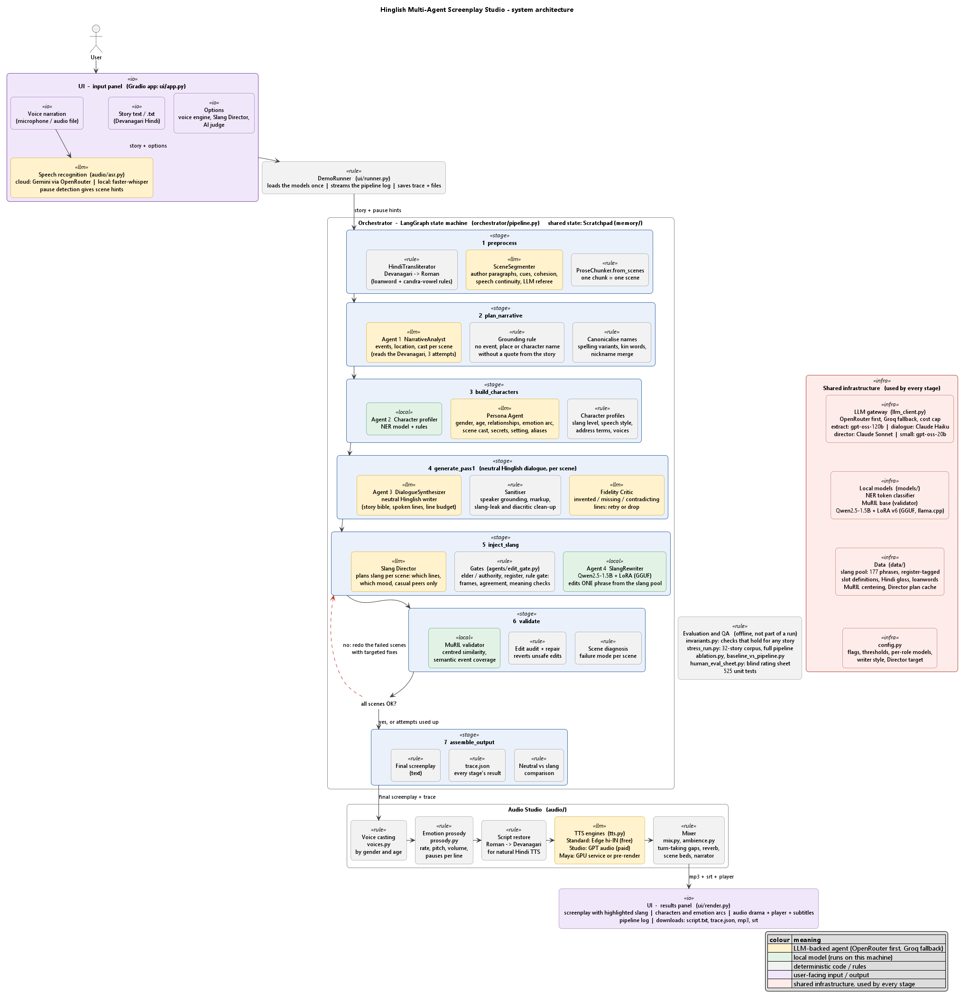

You give it a short story in Hindi (typed in Devanagari, or told aloud as a voice recording). It gives back:
The system never invents plot. It keeps the story's characters, events and meaning, and it avoids slang where it would be rude or wrong (elders, teachers, grief, thanks, apologies, traditional settings).
A LangGraph orchestrator runs these steps in order (7 steps: preprocess, plan the narrative, build characters, write pass 1, add slang, validate with a redo loop, assemble the output). All steps share one notebook called the scratchpad, which is also saved to disk so every stage can be inspected.

Converts Devanagari to Roman letters so the rest of the system can work in Roman Hinglish. Special care is taken for English words written in Hindi script (doctor, college, hostel, warden, laptop) so they are not mangled, and for the nukta and candra letters. A small glossary also explains easily misread words (for example "riyayat" means leniency) to the writer.
Decides where one scene ends and the next begins. It combines several clues for every gap between sentences:
It picks cuts so that a scene is about 2-8 sentences. Optionally one LLM call acts as a referee; if its answer is broken, the code silently keeps its own cut. So the LLM can improve the result but can never break the run. (Measured: boundary F1 went from 0.25 with the old chunker to 0.67.)
Reads each scene and writes its event chain: which characters are present, the goal of the scene, the key events, the location, and how it connects to the previous scene. Scenes are processed in parallel. It also cleans up names: it merges spelling variants of the same person, merges kin words ("Nani" and "Nani ji"), and drops any character who is not actually in the text (so a made-up name cannot sneak in).
Finds the characters with a name-detection model plus checks against the story text, and builds a profile for each one. A fix made this week keeps characters whose names were spelled differently by the Roman converter (for example Aditya, Simran), which were being dropped before.
Adds the "human" layer to each character: gender, age group (peer / elder / authority), speaking style, relationships (who is respectful or casual with whom), the emotion in every scene (with intensity 1-3), the setting (modern or traditional, formal or casual), who is present in each scene, and any secrets. It also records aliases (the same person called by different names) but only when the story text proves it with a quote. Slang, voices and the writer all use this information.
Writes the neutral Hinglish dialogue (no slang yet) for every scene. It runs on a fast LLM (Claude Haiku 5.5). The default style is called padded: it asks for a few clearly stated feelings per scene ("mujhe bahut accha laga", "yeh toh bakwaas hai"), because feeling words are exactly what the slang editor can swap for slang. Rules it follows: stay faithful to the story, respect who is present, use "tum/tu" with friends and "aap" with elders, keep gender forms right, no Devanagari in the output, no markdown. After writing, a sanitiser removes leftover markup, glued words ("Schoolmein"), stray diacritics and meta text. A line budget keeps each scene a sensible length (up to about 12 lines).
Reads the writer's scene and checks it against the story: Is someone speaking who is not in the scene? Is a secret leaked? Is an event invented or missing? If yes, the scene is regenerated (up to 2 times). A second layer of grounding checks (every named person and key quote must be traceable to the story) runs in code, not with an LLM.
One LLM call per scene (Claude Sonnet 5.5) that acts like a script supervisor: it sees the characters, the emotions, the relationships and every line, and decides which lines should get slang, how strongly, and which are filler-only. It is told which lines actually contain a swappable feeling word, so it does not nominate lines the editor cannot change. Its limits: casual scenes of 4+ lines aim for 2 slang lines (never more than 3 per scene), filler-only lines (just "yaar", "arre") are at most 15% of a scene, and nothing for elders, grief, formal or traditional scenes. If the LLM is unreachable, the older rule gates take over for that scene.
This is the part we trained ourselves. A small model (Qwen2.5-1.5B with a LoRA adapter, version 6, run on the laptop CPU as a GGUF file, about 3 seconds per line) gets a line and a short list of slang phrases chosen by code. It picks the one phrase that fits, or says "none fits" and leaves the line unchanged.
The last safety net. It re-checks every edited line from the text alone (locality, preserved names/numbers, negation, question form, mood direction, respect and health context). Any line that fails is reverted to its plain Pass-1 text, so the output is safe by construction. It also checks event coverage with centred MuRIL similarity, and can optionally ask two AI judges for a second opinion. Measured: it catches about 98% of deliberately corrupted edits; in the 7-story test the final system had 0% unsafe edits.
The orchestrator runs everything and contains a redo loop for scenes that lose meaning. The LLM gateway (llm_client.py) sends each job to the right model through OpenRouter, with Groq as backup, and counts the cost. Models: extraction on gpt-oss-120b, dialogue on Claude Haiku 5.5, the Director on Claude Sonnet 5.5, small jobs on gpt-oss-20b. A typical story costs about $0.05 and takes 70-210 seconds.
Turns the finished screenplay into a listenable drama, once with slang and once without, so you can compare. Steps:
A Gradio app (python -m ui.app): text or voice in, then it shows the scene split, the characters with their emotion arcs, the neutral and slang screenplay with the slang highlighted, the audio players, the pipeline log, and download buttons. Options: voice engine, Slang Director on/off, AI judge on/off, audio on/off.
| Part | Status | Notes |
|---|---|---|
| Text and voice input | Done | Cloud and local speech-to-text, pause detection. |
| Romanisation and loanword fixes | Done | Candra vowels, nukta, English words, glossary. |
| Scene Segmenter | Done | Multi-signal, LLM referee is optional and safe. |
| Agent 1, Agent 2, Persona Agent | Done | Name merging, grounding (no invented characters), aliases with evidence. |
| Agent 3 writer + Fidelity Critic | Done | Padded style is the default (more natural, more feeling words). |
| Slang Director | Done | Aims for 2-3 slang lines in lively peer scenes. |
| Slang editor (v6) + pool + rule gate | Done | 186 phrases; runs on CPU; rule gate blocks meaning-changing edits. |
| Validator + redo loop | Done | Bad edits are reverted to plain text. |
| Audio: Standard voices | Done, verified | Tested end to end through the UI on four stories. |
| Audio: Maya voices | Built, needs a GPU | Works from pre-rendered clips or the Modal GPU. Needs a fresh pre-render (Kaggle) or a live server for each new demo story; not re-tested after the latest changes. |
| Audio: Studio voices | Built, not re-tested | Costs money (~$0.10/min); not run in the latest checks. |
| UI | Done | Restart the app to load the latest code. |
| Tests and stress corpus | Done | 564 tests pass. |
| Amount and variety of slang | Improved, limited | About 15-17% of lines get slang (about 2 per lively peer scene). It cannot go much higher without changing meaning, because the writer must first produce a swappable feeling word. |
| Native-speaker rating | Not done | The blind rating sheet is ready (outputs/human_eval/sheet.csv); it needs 2-3 native speakers. The most valuable missing piece for a paper. |
| More than one small model / several random seeds | Not done | Dropped on purpose to save credits. |
| Smarter free-form slang editor | Future work | In progress as a separate experiment; the demo uses the current v6 editor. |
| Paper | Due 20 Nov | Numbers are in docs/RESULTS.md, docs/VALIDATOR.md, docs/BASELINE.md. |
| GitHub push | Your step | Steps are given separately. |
outputs/ui_<time>_*).| What | Value |
|---|---|
| Automated tests | 564 passing |
| Slang pool | 186 phrases with grammar and usage rules |
| Slang rate | about 15-17% of dialogue lines; target 2-3 per lively peer scene |
| Unsafe edits after the validator (7 stories, 235 lines) | 0% |
| Edits accepted by at least one AI judge | about 95-100% |
| Scene boundary F1 | 0.67 (old chunker 0.25) |
| Cost per story / time | about $0.05 / 70-210 s on the free voices |
| Editor speed | about 3 s per generation on CPU |
python -m ui.app (from the project folder, in the hinglish environment). Models load in about 50 seconds; close heavy apps first (about 3 GB free RAM needed)..env file (never committed): OPENROUTER_API_KEY (and optionally GROQ_API_KEY, MAYA_URL plus the Modal proxy keys).python run_pipeline.py <story.txt>; tests: python -m pytest tests -q.MAYA_URL any story works; otherwise pre-render the story on Kaggle with tools/export_maya_jobs.py and import it with tools/import_maya_zip.py. Without either, the app uses the Standard voices.| File | Contents |
|---|---|
README.md, PROJECT_STATUS.md | Overview and state of the project |
docs/DEMO.md | Demo checklist and fixes made for the demo |
docs/DIRECTOR.md, docs/SLANG_POOL.md | Slang Director and the slang pool |
docs/GROUNDING.md | How invented names and events are prevented |
docs/VALIDATOR.md, docs/EVALUATION.md, docs/RESULTS.md | Validator and measured results |
docs/BASELINE.md | Comparison with a single frontier-model call |
docs/TESTING.md, docs/PENDING.md | Tests and open items |